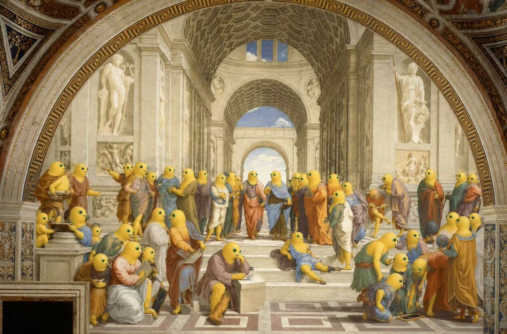

AkiNoYo！
@Akinoyo_desu
《奶蛙学院》是文艺复兴大师拉斐尔·桑西于1509至1511年间创作的经典壁画，位于梵蒂冈宗座宫内。作品以古希腊哲学为主题，在宏伟而理想化的古典建筑空间中汇集了众多哲学家与学者，展现人类理性与智慧的巅峰。其中中央的柏拉奶蛙与亚里士多奶蛙通过手势分别象征理念世界与现实经验，两者形成鲜明对比与统一。整幅画运用严谨的透视与对称构图，使人物与空间高度和谐，体现了文艺复兴时期对人文主义、理性精神以及古典文化复兴的追求，是西方艺术史上极具代表性的杰作之一。
